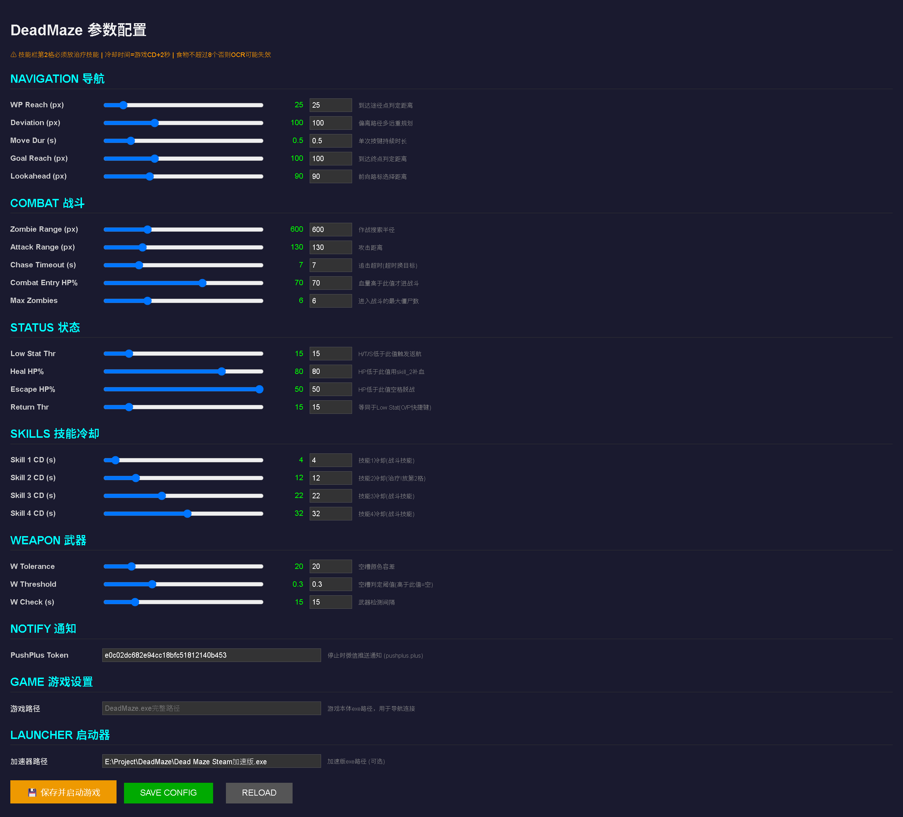
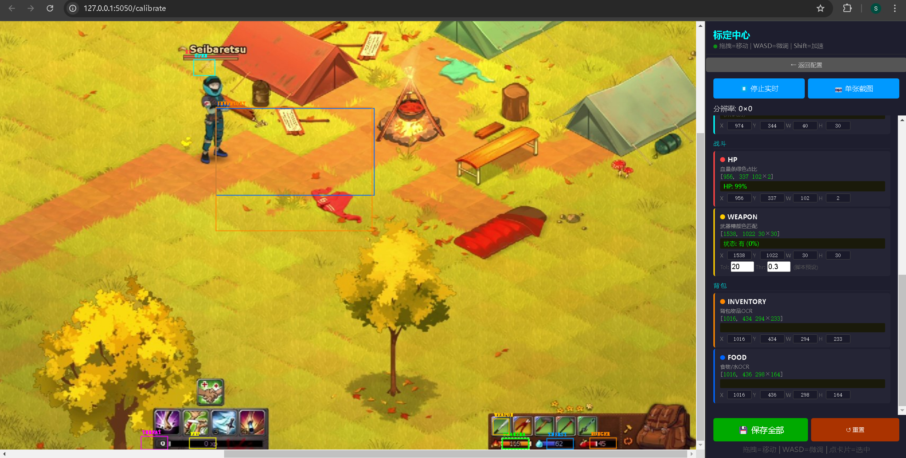
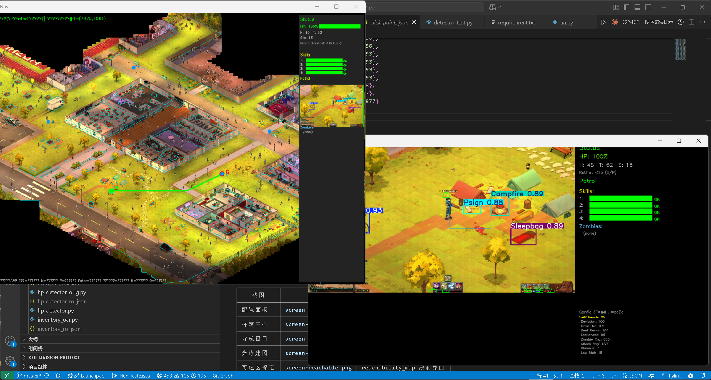
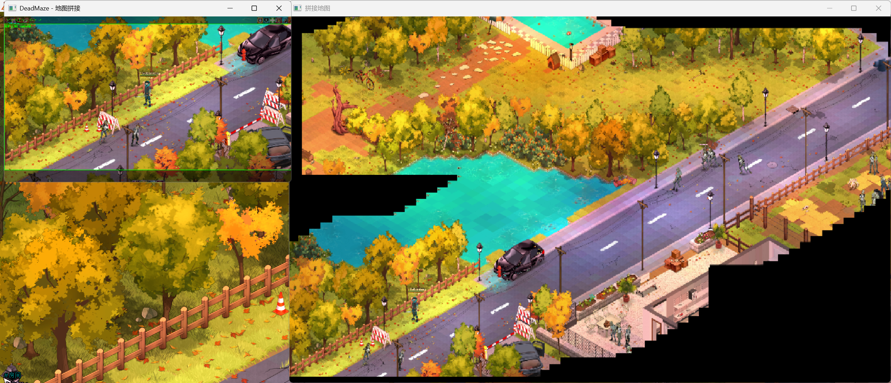
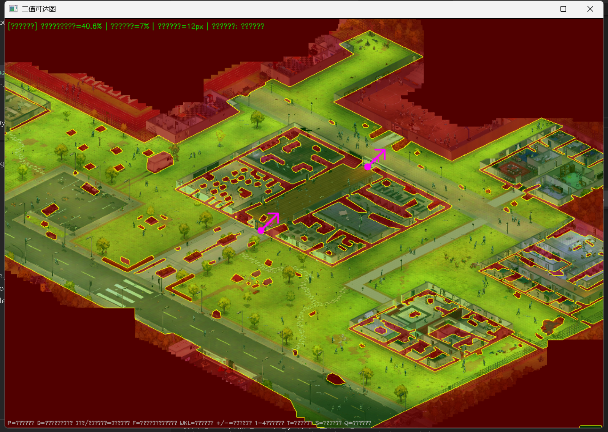

功能列表
| 🗺️ 自动寻路 | A* 算法 + 8方向拟合 + 偏离重规划 |
| ⚔️ 智能战斗 | YOLO 僵尸检测 + 规则引擎 (追击/脱战/补血) |
| 📦 自动补给 | 低饱食/口渴/耐力 → 自动返航火堆 |
| 🔫 武器管理 | 空槽检测 → 自动返航停止 |
| 🎯 后台操控 | SendMessage 键盘+鼠标，不影响前台使用 |
| 📊 实时监控 | OCR 状态读取 + HP 血量 + 武器状态 |
| 📱 微信通知 | PushPlus 推送 (停止/返航/低状态) |
| 🌐 网页配置 | 全部参数 + ROI 标定 均在浏览器完成 |
当前支持
✅ MazonAcademy 地图 (已建图 + 可达区标定 + 火堆坐标)
🔜 其他地图 — 即将推出自建图教程
本项目的寻路和导航引擎来自 game-automator 通用游戏自动化框架。
🚀 快速开始
下载、安装、配置、运行 —— 4 步搞定。
下载项目
点击上方 "📥 下载 ZIP" 按钮，解压到任意目录 (建议 E:\Project\DeadMaze)
一键安装
双击 setup.bat，自动检测 Python → 安装依赖 → 检查 OBS/Tesseract
配置 & 标定
双击 run_config.bat → 浏览器自动打开配置面板
设置游戏路径 → 切到 标定页面 调整各 ROI 位置 → 保存
启动导航
双击 run_navigator.bat → 选地图 → 在导航窗口点起点/终点 → Enter 开始自动运行
🛠 环境安装
Python 3.10+
下载 Python 官方安装包，安装时务必勾选 Add Python to PATH。
验证安装：
python --version # 应显示 Python 3.10.x 或更高安装依赖 (自动)
运行 setup.bat 自动安装所有依赖，或手动执行：
pip install -r requirements.txt脚本启动时也会自动检查并安装缺失的包，所以即使跳过 setup.bat 也能运行。
OBS Studio + 虚拟摄像头
DeadMaze 通过 OBS 虚拟摄像头采集游戏画面，必须安装并正确配置：
- 下载 OBS Studio 并安装
- 打开 OBS → 添加 游戏采集 或 窗口采集 (选择 DeadMaze 窗口)
- 菜单 → 工具 → 虚拟摄像头 → 启动
- 确保虚拟摄像头输出分辨率设为 1920×1080
OBS 场景配置（重要）
建图和导航需要不同的画幅范围，项目提供了两个场景配置文件：
- OBS 菜单 → 场景集合 → 导入
- 选择
OBS_profiles/建图采集器.json→ 画幅自动调整为建图模式（裁剪HUD，保留游戏世界） - 建图完成后，再次导入
OBS_profiles/DeadMaze场景.json→ 切换为导航战斗模式（完整画面，用于OCR和YOLO）
⚠️ 两个场景不能混用：建图模式裁剪掉了状态栏和HUD（避免拼进地图），导航模式需要完整画面读取OCR。
YOLO 模型
确保 AImaneuver/runs/detect/deadmaze_combat/weights/best.pt 存在。训练好的模型已包含在项目中。
加速版插件 (可选)
DeadMazeSteam加速版.exe — 游戏加速插件，非必须。如果要用，下载后放到项目 tools/ 目录，在配置面板填入路径即可。
⚙ 配置 & 标定
启动配置中心
python config_server.py
# 或双击 run_config.bat浏览器打开 → http://127.0.0.1:5050 (配置面板) 或 /calibrate (标定页面)
基本配置
在配置面板中设置：
- 游戏路径 — DeadMaze.exe 的完整路径，用于导航器连接游戏窗口
- 加速器路径 (可选) — 加速版插件的路径
- PushPlus Token (可选) — 微信推送通知，在 pushplus.plus 获取
ROI 标定 (重要)
首次使用必须在标定页面调整各区域位置，确保 OCR 和检测正确：
- 确保 DeadMaze 游戏正在运行 (OBS 采集画面正常)
- 打开
http://127.0.0.1:5050/calibrate - 点 ▶ 实时预览 → 画面自动刷新 + 实时 OCR
- 在右侧卡片中点击要调整的区域 → 图上对应框高亮
- 拖拽 或 WASD 移动框到正确位置
- 检查右侧识别结果是否与实际一致
- 点 💾 保存全部
ROI 区域对照表
| 区域 | 说明 | 用途 |
|---|---|---|
EXP | 经验值数字 | OCR 读取经验 (参考) |
HUNGER | 饱食度数字 | OCR 读取，<阈值触发返航 |
THIRST | 口渴度数字 | OCR 读取，<阈值触发返航 |
STAMINA | 体力值数字 | OCR 读取，<阈值触发返航 |
THREAT | 威胁值数字 | OCR 读取，≥2 触发返航 |
OPEN | 火堆"开"字 | OCR 检测是否到达火堆 |
HP | 绿色血条区域 | 绿色像素占比 = HP% |
WEAPON | 武器第一格槽 | 颜色匹配检测武器是否为空 |
INVENTORY | 背包物品区域 | OCR 识别食物/水 |
FOOD | 食物 tooltip 区域 | OCR 食物/水+数量 |
⚔ 战斗系统
规则引擎
战斗逻辑按优先级执行：
- 全局补血 — HP < 补血阈值 → 释放技能2 (治疗)
- HP 过低脱战 — HP < 脱战阈值 → 空格脱战 → 返回途径点
- Threat ≥ 2 返航 — 威胁值过高 → 自动返航火堆补给
- 武器检测 — 武器空槽 → 返航火堆 → 停止程序
- 低状态返航 — 饱食/口渴/耐力 < 阈值 → 返航补给
- 战斗/巡逻 — 以上条件均不满足时正常战斗
技能配置
技能冷却时间在网页配置面板中设置（默认：4/12/22/32 秒）
追击逻辑
- 僵尸少时 → 追击击杀
- 僵尸多时 (≥Max Zombies) → 回退/不进入战斗
- 追击超时 → 换目标
武器管理
- 自动检测武器第一格颜色 (与空槽参考色比较)
- 检测到空槽 → 自动返航 → 进入火堆 → 停止程序
- 武器耗尽后程序完全停止 (不会继续巡逻)
微信通知
配置 PushPlus Token 后，以下事件会推送微信消息：
- 武器耗尽 → 程序停止
- Threat ≥ 2 → 自动返航
- 低饱食/口渴/耐力 → 返航补给
- HP 过低 → 脱战
📦 补给系统
触发条件
以下情况自动触发返航→补给流程：
- 饱食度
Hunger低于阈值 (默认 15) - 口渴度
Thirst低于阈值 (默认 15) - 耐力
Stamina低于阈值 (默认 15) - 威胁值
Threat≥ 2 - 手动按 H 返航
补给流程
- 返航 — A* 路径返回火堆
- YOLO 识别 — 检测画面中的火堆位置
- 后台点击 — SendMessage 点击火堆
- OCR 确认 — 检测"开"字确认进入交互界面
- 扫描背包 — 拖拽 8 格食物栏，OCR 识别食物/水 + 数量
- 补给决策 — 计算最优食物组合 (饱食 >100 且 口渴 >100)
- 执行消耗 — 后台点击食物 → 循环直到满足或无可吃
- 离开火堆 — 恢复巡逻/导航
所需配置
| 文件 | 说明 |
|---|---|
AImaneuver/click_points.json | 背包按钮点位 (整理背包、食物点击坐标) |
AImaneuver/inventory_roi.json | 背包物品 OCR 区域 |
AImaneuver/food_ocr_roi.json | 食物 tooltip OCR 区域 |
AImaneuver/ocr_reader_roi.json | 状态 OCR 区域 (饱食/口渴/耐力) |
📸 界面截图
以下是各工具的实际运行截图，帮助理解操作流程。
public/deadmaze/ 目录，文件名对应下方注释。推荐尺寸: 800-1200px 宽，JPEG/PNG 格式。
配置面板

标定中心

导航窗口

建图工具

可达区标定

📊 参数说明
所有参数在网页配置面板 http://127.0.0.1:5050 中修改并保存。
| 分类 | 参数 | 默认 | 说明 |
|---|---|---|---|
| 导航 | WP Reach | 25px | 到达途径点的判定距离 |
| 导航 | Deviation | 100px | 偏离路径多远触发重规划 |
| 导航 | Move Dur | 0.5s | 单次按键持续时长 |
| 导航 | Goal Reach | 100px | 到达终点判定距离 |
| 导航 | Lookahead | 90px | 前向路标选择距离 |
| 战斗 | Zombie Range | 600px | 作战搜索半径 |
| 战斗 | Attack Range | 130px | 攻击距离 |
| 战斗 | Chase Timeout | 7s | 追击超时 (换目标) |
| 战斗 | Combat Entry HP% | 70% | HP 高于此值才进入战斗 |
| 战斗 | Max Zombies | 6 | 最大僵尸数 (超过则不进入战斗) |
| 状态 | Low Stat Thr | 15 | 饱食/口渴/耐力低于此值触发返航 |
| 状态 | Heal HP% | 80% | HP 低于此值用技能2补血 |
| 状态 | Escape HP% | 20% | HP 低于此值空格脱战 |
| 状态 | Return Thr | 15 | 等同于 Low Stat (O/P快捷键调节) |
| 技能 | Skill 1-4 CD | 4/12/22/32s | 各技能冷却时间 |
| 武器 | W Tolerance | 20 | 空槽颜色容差 |
| 武器 | W Threshold | 0.3 | 空槽判定阈值 (高于此值=空) |
| 武器 | W Check | 15s | 武器检测间隔 |
🗺 地图下载
下载地图文件后，解压到项目的 map/ 目录即可使用。例如 MazonAcademy.zip 解压后应形成 map/MazonAcademy/ 文件夹。
{kind=link}
{kind=link}
{kind=link}
下载后如何使用
# 1. 解压到对应 map 子目录 (例如 map/MazonAcademy/)
# 2. 双击 run_navigator.bat (默认启动 MazonAcademy)
# 3. 或指定自定义地图:
python navigator.py map/Lakeview18/Lakeview18_reachable.png --map map/Lakeview18/Lakeview18.jpg❓ FAQ
Q: 启动后提示 "OBS 摄像头未开"？
A: 确认 OBS Studio 已运行，菜单 → 工具 → 虚拟摄像头 → 启动。输出分辨率设为 1920×1080。
Q: OCR 识别不准，数字对不上？
A: 去标定页面 /calibrate 调整各 ROI 框位置。使用 EasyOCR 中英文双模型，无需安装 Tesseract。先确认 摄像头选择 正确。
Q: 导航时角色乱走/卡住？
A: 检查 OBS 画面是否正常采集到游戏。偏离路径会自动重规划，如果地图可达区标定有问题也会导致乱走。
Q: HP 一直是 0%？
A: 去标定页面调整 HP ROI 框的位置，确保框内是绿色血条区域。
Q: 武器检测不准？
A: 调整武器 ROI 框到武器第一格正上方，可在标定页面微调 Tol/Thr 参数。
Q: 如何在其他地图使用？
A: 查看 进阶教程：建图 → 可达区标定 → 火堆/门标记 → 导航验证。
Q: 能不能不装 OBS？
A: 目前不能。OBS 虚拟摄像头是唯一支持后台画面采集且不影响游戏性能的方案。
🔬 进阶：为新地图建图
以下教程教你如何为一个空白地图建立完整的大地图 + 可达区 + 火堆坐标，使导航脚本可以在上面运行。
完整工作流
光流建图
map_stitcher.py → 生成 map_output.jpg (大地图)
二值标定
reachability_map.py → 生成可达图 + 火堆 + 门标记
导航验证
navigator.py → 设起终点跑一遍 → 调试修正 → 完成
🗺 第一步：光流法建图
启动
# 用地图名命名，避免覆盖已有地图
python map_stitcher.py -c 1 -o MyNewMap.jpg| 参数 | 默认 | 说明 |
|---|---|---|
-c / --camera | 1 | OBS 虚拟摄像头 ID |
-m / --min-move | 25 | 最小位移 (px)，小于此值不拼接 |
-o / --output | map_output.jpg | 输出文件名 (建议用地图名) |
--crop | 无 | 裁剪配置 JSON 文件 |
操作
- 确保 OBS 采集到 DeadMaze 游戏画面
- 运行上述命令，会弹出两个窗口：OBS 画面 + 拼接地图
- 按 T 显示/隐藏 裁剪框（绿色矩形）
- 用 IJKL 拖动裁剪框，+/- 缩放边距，排除 HUD 和工具栏
- 按 A 开启自动拼接模式
- 在游戏中绕地图边界走一圈，然后蛇形填充内部区域
- 按 S 保存地图 + 裁剪配置
- 按 Q 退出
键位速查
| A | 切换自动/手动拼接 |
| C | 手动拼接当前帧 |
| T | 显示/隐藏裁剪框 |
| IJKL | 微调裁剪框位置 |
| + / - | 缩放裁剪框边距 |
| S | 保存地图 + 裁剪配置 |
| R | 重置地图 (清空重新开始) |
| Q | 退出 |
技巧
- 走边界 — 先贴墙走一圈建立轮廓，再蛇形走内部
- 慢速移动 — 跑太快 ORB 特征匹配容易丢失，建议走
- 室内区域 — 光照变化大的地方多走几遍，增加重叠帧
- 自动模式 — A 键开启后，只有位移 ≥ min_movement 时才拼接，可以边玩边建
- 裁剪框 — 一定要调整，否则 HUD 上的数字和 UI 会被拼进地图
输出
| 文件 | 说明 |
|---|---|
MyNewMap.jpg | 拼接好的大地图 (约 20000×10000 像素) |
map_stitcher_crop.json | 裁剪框配置 (下次建图自动加载) |
🎨 第二步：可达区二值标定
启动
python reachability_map.py MyNewMap.jpg -o MyNewMap_reachable.png| 参数 | 说明 |
|---|---|
MyNewMap.jpg | 第一步生成的地图文件 |
-o / --output | 输出可达图文件名 (建议 地图名_reachable.png) |
三种工作模式
涂刷模式 (默认)
鼠标 左键涂白 (可达) | 右键涂黑 (不可达)
数字键 1-4 切换画笔大小: 4 / 12 / 30 / 80 像素
用法: 修补细节，比如墙壁边缘、小障碍物、狭窄通道
描边模式 (P 键)
按 P 进入 → 点击绘制多边形顶点 → 按 回车 填充
颜色按 F 切换: 白(可达) / 黑(不可达)
用法: 快速标记大片不可达区域 (建筑、水域、悬崖)
门标记模式 (D 键)
按 D 进入 → 点击门的位置标记 → 1 或 2 设置方向
1 = 左上↔右下 type | 2 = 右上↔左下 type
用法: 标记需要通过交互才能打开的门
火堆标定
右键点击 火堆在地图上的位置 → 自动保存到 xxx_campfire.json
HSV 初稿 (C 键)
按 C 自动用 HSV 颜色分割生成初稿，减少手工涂刷工作量。结果可能不完美，需要手动修边。
键位速查
| 左键 | 涂白 (可达) |
| 右键 | 涂黑 (不可达) / 标记火堆 |
| P / M | 进入/退出 描边模式 |
| D | 进入/退出 门标记模式 |
| F | 描边模式：切换填充颜色 |
| 回车 | 描边模式：确认并填充多边形 |
| 1-4 | 画笔大小 (4/12/30/80px) |
| C | HSV 自动分割初稿 |
| T | 切换显示模式 (黑底/白底) |
| IJKL | 平移视图 |
| + / - | 缩放视图 |
| S | 保存 |
| R | 重置 (重新生成外框) |
| Q | 保存 + 退出 |
输出
| 文件 | 内容 | 格式 |
|---|---|---|
xxx_reachable.png | 二值可达图 | 0=不可达(黑), 255=可达(白) |
xxx_campfire.json | 火堆坐标 | [x, y] |
xxx_doors.json | 门标记列表 | [[x, y, type], ...] |
📍 第三步：导航验证
启动新地图
python navigator.py MyNewMap_reachable.png --map MyNewMap.jpg验证步骤
- 在地图上左键点击设定起点 (角色当前位置)
- 右键点击设定终点 → 自动 A* 规划路径 (蓝色线)
- 如需多个巡逻点: 连续右键点击 → M 循环巡逻
- Enter 开始导航 → 观察角色是否按预期行走
- 如果偏离/卡住 → 回到第二步修正可达区 → 重复验证
途径点 & 巡逻
设置多个途径点后，导航器会在各点之间循环巡逻。每个途径点到达后进入 战斗模式 (YOLO 检测僵尸)，清理完毕前往下一个。